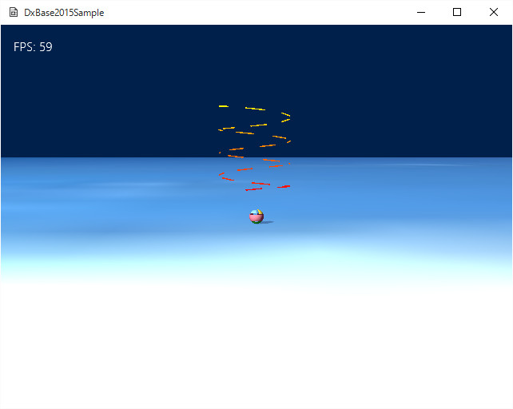
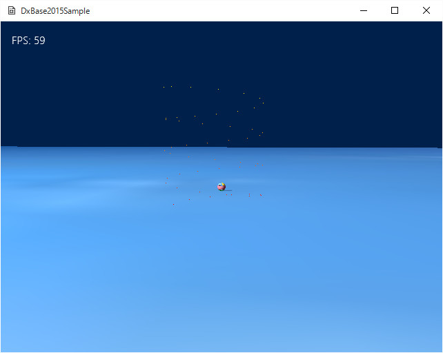

４０７．線と点の描画
今までは、オブジェクトの
面の描画に
三角形を使ってました。３Ｄにせよ２Ｄにせよ、
座標上の３つの点が決定すれば、そのオブジェクトの
面が確定します。
では、
線や点はどうかというと、もっと単純です。線は２点が決定すれば確定しますし、点もいわゆる
ポジションですから、それ以上でも以下でもありません。
DxBase2015には、
線や点を描画するクラスなどはありません。パーティクルエフェクトは
面ですから、点や線ではありません。
なぜ用意されてないかといいますと、
線や点の描画を、特定のクラスなどで仕様をある程度縛ってしまうと、かえって不便になる、という理由と、DirecvtX11で直接描画しても、さほど（
２Ｄ３Ｄの描画に比べて）大変ではないからです。
この項では、
線と点の簡単な作成方法を紹介します。
頂点の作成
まず、
線の描画から紹介します。
Sample407ディレクトリのソリューションを開いて、リビルド、実行しますと以下の画面が現れます。

図4007a
カメラ奥の方にくるくる回る物体があります。これは、線の集合（配列）として表現されています。
今回のサンプルは、前項のサンプルを少し修正して使用してます。ですので、
前項のサンプルの応用の指針にもなると思います。
まず、前項サンプルにあった
シャドウマップ関連のクラスやシェーダは削除します。
そうしたうえで、まず、
頂点バッファの作成から行います。今回の頂点は
VertexPositionColor型です。すなわち
ポジションと色を持つ頂点となります。
頂点バッファの作成は
CustomDrawVortex::CreateCustomMesh()関数で行います。
void CustomDrawVortex::CreateCustomMesh(){
m_BackupVirtex.clear();
float rot = 0.0f;
float Min = 1.0f / 50.0f;
for (size_t i = 0; i < 50; i++){
m_BackupVirtex.push_back(
VertexPositionColor(
Vector3(sin(rot), (float)i * 0.05f, cos(rot)), //渦巻き状になるよう初期化
Color4(1.0, Min * i, 0.0, 1.0)
)
);
rot += 0.5f;
}
//頂点バッファの作成（頂点を変更できる）
VertexUtil::CreateDynamicVertexBuffer(m_VertexBuffer, m_BackupVirtex);
//頂点数の設定
m_NumVertices = static_cast<UINT>(m_BackupVirtex.size());
}
ここでバックアップ用に作成している
m_BackupVirtexは
VertexPositionColor型の配列です。前項とは変わっていますので注意してください。
ここでは、頂点を渦巻き状になるように設定しています。渦巻きを求めるのに、
sinとcosを利用しています。
頂点バッファの作成は、前項と同じように
VertexUtil::CreateDynamicVertexBuffer()テンプレート関数を利用しています。この関数はテンプレートなので、頂点の配列の型が変わっても利用できます。
シェーダの作成
シェーダも、前項のシェーダを修正して作成します。それぞれ、
VertexPositionColor型を受け付けるように修正します。
また、ライティングやテクスチャは今回は利用しませんので、削除します。
cpp側では、
CustomDrawConstantBuffer構造体や、
頂点シェーダクラスに渡す頂点の型も変わっていますので注意しましょう。
このように、
頂点を自作したりシェーダを自作する場合は、
必要としている頂点の型はどの型で、それをシェーダに渡すためにはどのようなコンスタントバッファが必要か、に注意を払う必要があります。ここに一貫性がないと、
お化けのようなオブジェクトが表示されたり、逆に
全く表示されなかったりします。
更新
頂点の変更は、
CustomDrawVortex::UpdateCustomMesh()で行います。前項のようにバックアップから修正する場所のみ修正して、頂点全体を更新します。
線の描画
描画は、
CustomDrawVortex::Draw()で行います。重要な部分のみ抜粋します。
void CustomDrawVortex::Draw(){
//中略
//描画方法
pID3D11DeviceContext->IASetPrimitiveTopology(D3D11_PRIMITIVE_TOPOLOGY_LINELIST);
//描画
pID3D11DeviceContext->Draw(m_NumVertices, 0);
//中略
}
このように、
pID3D11DeviceContext->IASetPrimitiveTopology()関数に、
D3D11_PRIMITIVE_TOPOLOGY_LINELISTを渡すことで線の描画になります。
また、今回は、インデックスによる描画を使用せずに、
pID3D11DeviceContext->Draw()関数を利用します。パラメータに描画すべき頂点の数と、開始地点を渡します。
点の描画
さて、
点の描画ですが、
線の描画が実装されていれば、点に変更するのは簡単です。（もちろん最初から
点として描画するために頂点を作成しても問題ありません）。
今回のサンプルで、
線を点に変更するのには、
CustomDrawVortex::Draw()で以下のように変更します。
void CustomDrawVortex::Draw(){
//中略
//描画方法
pID3D11DeviceContext->IASetPrimitiveTopology(D3D11_PRIMITIVE_TOPOLOGY_POINTLIST);
//中略
}
これで、点の描画になります。
以下のような実行画面です。

図4007b
渦巻きの回転が速いのでちょっと見にくいかもしれません。その場合は回転をゆっくりにしてみてください。
CustomDrawVortex::UpdateCustomMesh()で調整できます。
この項では、頂点の配列を作成して、それを
線もしくは点で描画する方法を紹介しました。
特に
線の描画は
雨を作ったり集中線を描いたりなどに利用方法はいろいろあると思いますので、パーティクルエフェクトと合わせて、演出に利用するとゲームの楽しさが増すと思いますので、いろいろ試してみましょう。